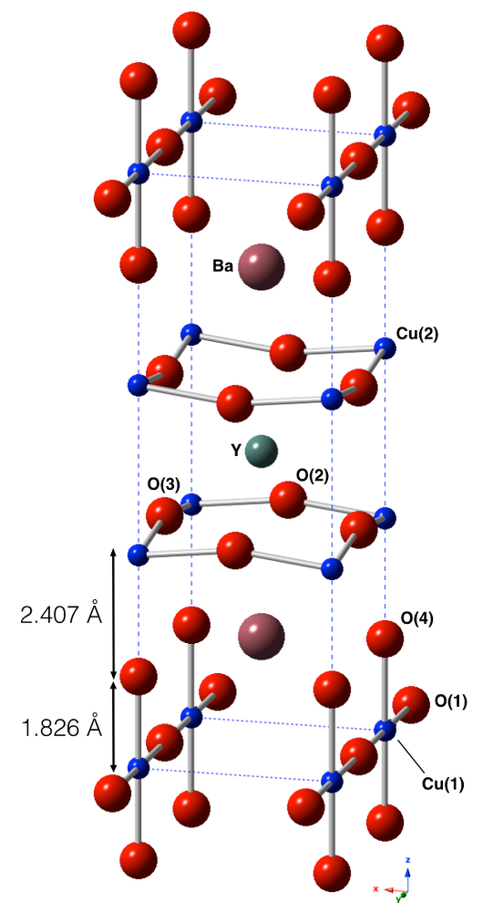

Efectos polarónicos en superconductores basados en cobre a partir de un modelo Peierls-Hubbard de tres sitios.
Examen para obtener el grado de Doctor en Ciencias en la Especialidad de Física Aplicada presentado por:
Andrés García Saravia Ortiz de Montellano
Director de tesis:
Dr. José Mustre de León
14 de Febrero de 2015
Introducción
Superconductividad descubierta en 1911 (Teoría BCS)

Superconductividad de alta temperatura en 1986

Todavía no hay una teoría para la supeconductividad de alta temperatura crítica
Teoría BCS
Asume una interacción atractiva entre electrones
Superconductores de baja temperatura crítica
Esta interacción está mediada por el intercambio de fonones
Estima una temperatura crítica de transición superconductora ($T_c$) máxima de alrededor de 30K
Superconductores de alta temperatura crítica
¿Qué es lo que media la interacción?
¿Es un mecanismo diferente al BCS?
Esquema de la presentación
- Resultados experimentales
- Conductividad eléctrica
- Calor específico
- Inhomogeneidades estructurales y electrónicas
- Efectos isotópicos anómalos
- Propuesta de un modelo cuántico
- Análisis del modelo
- Distorciones locales dinámicas y formación de polarones
- Espectro infrarojo
- Excitaciones electrónicas
- Efectos isotópicos
- Interpretación y discusión
- Conclusiones
- Trabajo futuro
Resultados experimentales
Resistividad eléctrica
Interacciones $e^--e^-$ fuertes.
Calor específico
Acoplamiento $e^-$-fonón importante.
Efectos isotópicos anómalos
Formación de polarones
Aproximación de Born-Oppenheimer no es aplicable
Inhomogeneidades dinámicas
Inapllicabilidad del formalismo de espacio recíproco
YBa2Cu3O7-δ

Modelo
Hamiltoniano en espacio real con interacciones carga-fonón
$H = H_{el} + H_{ph} + H_{el-ph}$
$ H_{el} = \sum_{\sigma,i=1}^3 E_i n_{\sigma i} + U\sum_{i=1}^3 n_{i\downarrow}n_{i\uparrow} + t\sum_{\sigma} \left(c_{1\sigma}^\dagger c_{2\sigma} + c_{2\sigma}^\dagger c_{3\sigma} + H.c. \right)$
$ H_{ph} = \hbar \omega_{ir}\left(b_{ir}^\dagger b_{ir}+\frac{1}{2}\right) + \hbar \omega_R \left( b_R^\dagger b_R + \frac{1}{2}\right)$

$H_{el-ph} = \tilde{\lambda_{ir}}u_{ir}(n_3 - n_1) + \tilde{\lambda_R} u_R (n_1 + n_3-s_0)$
$u_R \equiv \left(\frac{\hbar}{2 m_R \omega_R}\right)^{1/2}(b_R^\dagger + b_R) = \frac{x_3 - x_1}{\sqrt{2}}$
$ u_{ir} \equiv \left(\frac{\hbar}{2 m_{ir} \omega_{ir}}\right)^{1/2}(b^\dagger_{ir}+b_{ir}) = \frac{ x_1 + x_3 - ( 2 m_O/m_{Cu})x_2}{(2 + 4 m_O/m_{Cu})^{1/2}}$
Distorciones dinámicas del cúmulo
La diferencia de distancias de enlace ($d$) en términos de la coordenada fonónica ($u_{ir}$)
$d=\sqrt{2}\left(1 + 2\frac{m_O}{m_{Cu}} \right)^{1/2}u_{ir}$
Hallamos la probabilidad de hallar al sistema con distintos valores de $u_{ir}$
Distorción estática
Distorción dinámica
Sin distorción
El valor $\lambda_{ir}=0.1263eV$ reproduce la distorción dinámica observada por EXAFS
Este observación permite establecer un valor para $\lambda_{ir}$